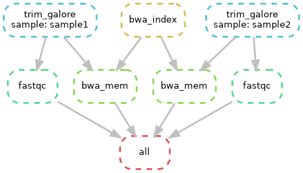
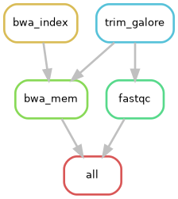

Snakemake on Saga
Snakemake is a workflow manager that defines pipelines as a set of rules, each describing how to produce output files from input files. It integrates natively with SLURM schedulers and supports container technologies like Apptainer/Singularity.
This guide demonstrates how to configure and run Snakemake pipelines efficiently on the Saga cluster, particularly when using Apptainer/Singularity containers.
Getting Started with Snakemake
In both approaches on this page, Snakemake itself is loaded as a cluster module:
module load snakemake/9.14.0-foss-2025a
Snakemake acts as the orchestrator: it runs on the login node, reads the Snakefile, resolves dependencies, and submits SLURM jobs. Both approaches load a Snakemake module on Saga. They differ only in how the software environment inside each rule is provided:
1. Using the module system for rules: Each rule loads its software (e.g. bwa, trim_galore) from Saga’s pre-installed modules. Use this when the tools needed for your pipeline are already available as Saga modules.
2. Using containers for rules: Each rule pulls its own container image via Apptainer, giving you full control over software versions independently of what is installed on the cluster. Snakemake itself is still loaded as a module. Only the per-rule tools run inside containers. Use this when you need specific software versions not available as modules, or when you want your pipeline to be portable across clusters.
Example: A Minimal Bioinformatics Pipeline (Module System)
In this example, we will show how to run Snakemake using the module system. At the end, we will show how to use containers.
Workflow overview
This example is a 3-step workflow for two paired-end samples.
Inputs:
Paired-end FASTQ files:
data/{sample}_R1.fastq.gzanddata/{sample}_R2.fastq.gzReference genome:
data/reference/dummy_genome.fasta
Core processing steps:
Trim reads (
trim_galore)Run quality control (
fastqc)Align reads to the reference (
bwa_mem)
Outputs:
Trimmed reads in
results/trimmed/FastQC HTML reports in
results/qc/Mapped SAM files in
results/mapped/
Snakemake resolves dependencies automatically, including the one-time reference indexing step (bwa_index) before alignment.
Execution order:
trim_galore: trim paired-end readsfastqc: generate QC report from trimmed readsbwa_index: index the reference genomebwa_mem: align reads to the indexed referenceall: collect final expected outputs
Step 1: Prepare the Dummy Data
First, create a working directory and generate some artificial sequencing data. This ensures you have a clean, controlled environment to test the workflow. Run these commands directly in your terminal:
# Create project directories
mkdir -p snakemake_example/data/reference
cd snakemake_example
# Create a tiny dummy reference genome
echo ">chr1" > data/reference/dummy_genome.fasta
echo "ACGTACGTACGTACGTACGTACGTACGTACGTACGTACGTACGTACGTACGTACGTAC" >> data/reference/dummy_genome.fasta
# Create dummy paired-end reads for two samples
for sample in sample1 sample2; do
echo -e "@read_${sample}_001\nCGTACGTACGTACGTACGT\n+\nIIIIIIIIIIIIIIIIIII" | gzip > data/${sample}_R1.fastq.gz
echo -e "@read_${sample}_001\nACGTACGTACGTACGTACG\n+\nIIIIIIIIIIIIIIIIIII" | gzip > data/${sample}_R2.fastq.gz
done
Step 2: The Snakefile
The basic idea of Snakemake is to have rules that connect inputs to outputs.
The all rule is a special target rule. It does not run a tool itself. Instead, it tells Snakemake which final files must exist for the workflow to be considered complete.
If you are new to Snakemake concepts, see the official Snakemake tutorial and Snakemake workflow basics.
Create a file named Snakefile in your snakemake_example directory. This file contains the rules of your pipeline.
Notice that we do not specify the Slurm account or partition inside the rules. We only define the scientific requirements (mem_mb and runtime). We will handle the administrative billing in the submission script later. The script below should be called Snakefile:
What mem_mb and runtime mean
mem_mbis the total memory requested per job in MB. In this guide it is mapped to Slurm--mem={resources.mem_mb}M, somem_mb=8000means 8 GB for the whole job (not per CPU core).runtimeis the wall-clock time limit per job. In this guide it is mapped to--time={resources.runtime}. When given as a plain integer (for exampleruntime=60), Slurm interprets it as minutes.Rule-level values override
--default-resources. If a rule does not definemem_mborruntime, the defaults fromrun_snakemake.share used.
Example:
rule align:
threads: 8
resources:
mem_mb=32000, # 32 GB total for this job
runtime=180 # 3 hours
Practical tuning tips:
If a job is killed with an out-of-memory error, increase
mem_mb.If a job is cancelled due to time limit, increase
runtime.Avoid over-requesting large margins, since that can increase queue wait time.
The example Snakefile used in this guide is shown below.
# ==============================================================================
# Minimal Snakemake Example for Saga
# ==============================================================================
SAMPLES = ["sample1", "sample2"]
# Collect all final outputs required to consider the workflow complete.
rule all:
input:
expand("results/mapped/{sample}.sam", sample=SAMPLES),
expand("results/qc/{sample}_R1_val_1_fastqc.html", sample=SAMPLES)
# Trim paired-end reads and write cleaned FASTQ files for each sample.
rule trim_galore:
input:
r1 = "data/{sample}_R1.fastq.gz",
r2 = "data/{sample}_R2.fastq.gz"
output:
r1 = "results/trimmed/{sample}_R1_val_1.fq.gz",
r2 = "results/trimmed/{sample}_R2_val_2.fq.gz"
log:
"logs/trim_galore/{sample}.log"
threads: 2
resources:
mem_mb=4000,
runtime=30
shell:
"""
module reset
module load Trim_Galore/0.6.10-GCCcore-11.3.0
mkdir -p results/trimmed
trim_galore --paired --quality 20 --length 20 --cores {threads} --output_dir results/trimmed {input.r1} {input.r2} 2>&1 | tee {log}
"""
# Run FastQC on trimmed reads to generate per-sample quality reports.
rule fastqc:
input:
"results/trimmed/{sample}_R1_val_1.fq.gz"
output:
"results/qc/{sample}_R1_val_1_fastqc.html"
log:
"logs/fastqc/{sample}.log"
threads: 2
resources:
mem_mb=4000,
runtime=30
shell:
"""
module reset
module load FastQC/0.12.1-Java-11
mkdir -p results/qc
fastqc --threads {threads} --outdir results/qc {input} > {log} 2>&1
"""
# Build the BWA index for the reference genome before alignment.
rule bwa_index:
input:
"data/reference/dummy_genome.fasta"
output:
"data/reference/dummy_genome.fasta.bwt"
log:
"logs/bwa_index.log"
resources:
mem_mb=2000,
runtime=10
shell:
"""
module reset
module load BWA/0.7.19-GCCcore-14.3.0
bwa index {input} 2> {log}
"""
# Align trimmed read pairs to the indexed reference and output SAM files.
rule bwa_mem:
input:
r1 = "results/trimmed/{sample}_R1_val_1.fq.gz",
r2 = "results/trimmed/{sample}_R2_val_2.fq.gz",
index = "data/reference/dummy_genome.fasta.bwt",
ref = "data/reference/dummy_genome.fasta"
output:
"results/mapped/{sample}.sam"
log:
"logs/bwa_mem/{sample}.log"
threads: 2
resources:
mem_mb=4000,
runtime=30
shell:
"""
module reset
module load BWA/0.7.19-GCCcore-14.3.0
mkdir -p results/mapped
bwa mem -t {threads} {input.ref} {input.r1} {input.r2} > {output} 2> {log}
"""
Note
The threads: values here (2 for all rules) are chosen for the tiny dummy data in this example. For real workloads you would typically increase these. For example, bwa mem scales well up to 16 threads on large genomes, while trim_galore and fastqc benefit from 4–8 threads. The threads value is passed directly to --cpus-per-task in the submission script, so increasing it also increases the number of CPU cores requested from Slurm.
Note
GPU resources are only relevant if the tool itself supports GPU acceleration. The tools used in this minimal example (trim_galore, fastqc, and bwa mem) are CPU tools, so requesting GPUs would not speed them up. For GPU-capable tools, define a GPU resource in the rule (for example resources: gpus=1) and include --gres=gpu:{resources.gpus} in the submission script.
Example rule snippet for GPU usage:
rule gpu_example:
threads: 4
resources:
mem_mb=16000,
runtime=120,
gpus=1
shell:
"gpu_enabled_tool ..."
Step 3: The Submission Script
It is recommended to run the Snakemake controller process on the login node when using --executor cluster-generic.
Why this is recommended and acceptable:
The Snakemake process on the login node mainly handles workflow logic (dependency resolution, job submission, and status tracking), which is lightweight.
The actual production compute work is still executed in Slurm jobs on compute nodes via
sbatch.This follows NRIS guidance that production code should not run on login nodes: only orchestration runs on login, while CPU- and memory-intensive tasks run in the queue.
For the general rule, see Submitting jobs.
Create a file called run_snakemake.sh. Be sure to insert your actual project account.
#!/bin/bash
set -euo pipefail
# Load the module (adjust version if needed)
module reset
module load snakemake/8.27.0-foss-2024a
# Set this to your Saga project account
SBATCH_ACCOUNT=nn????k
# Redirect Snakemake cache to work directory to avoid filling home quota
export XDG_CACHE_HOME="/cluster/work/users/$USER/.cache"
mkdir -p "$XDG_CACHE_HOME"
echo "Running Snakemake in Cluster Mode..."
# Create log directory for Slurm output files
mkdir -p logs/slurm
# --cluster "sbatch ..." tells Snakemake to submit each rule as a Slurm job
# --jobs 50 limits the max concurrent jobs to 50
# --default-resources sets defaults for rules that don't have them defined in Snakefile
snakemake --unlock --cores 1
snakemake \
--jobs 50 \
--executor cluster-generic \
--cluster-generic-submit-cmd "sbatch --account=$SBATCH_ACCOUNT --job-name={rule} \
--parsable --output=logs/slurm/%x-%j.out --error=logs/slurm/%x-%j.err \
--time={resources.runtime} \
--cpus-per-task={threads} --mem={resources.mem_mb}M" \
--default-resources mem_mb=4096 threads=1 runtime=60 \
--printshellcmds
Step 4: Run the Workflow
Open a tmux or screen session (see Best Practices for Running Pipelines for instructions on using tmux and screen). Make the script executable and run it:
chmod +x run_snakemake.sh
./run_snakemake.sh
Note
If your workflow was interrupted (e.g. due to a job timeout or connection loss), some output files may be incomplete. Re-running the script as-is will cause Snakemake to skip those rules, since it sees the partial output files as already present. Add --rerun-incomplete to the snakemake command in run_snakemake.sh to force those rules to rerun and produce complete outputs.
Step 5: Review the results
Once the workflow has completed, you can verify that all expected output files were created:
ls results/trimmed/ # Trimmed FASTQ files
ls results/qc/ # FastQC HTML reports
ls results/mapped/ # Aligned SAM files
Open the FastQC quality-control reports in a browser to inspect read quality:
ls results/qc/*.html
You can transfer these HTML files to your local machine using scp or rsync. Open a terminal window on your local machine and follow the instructions at Review the Execution Report.
Check the SLURM logs for any warnings or errors from individual jobs:
ls logs/slurm/
You can also ask Snakemake for a summary of what was run and whether all outputs are up to date. This command must be run from the snakemake_example/ directory (where your Snakefile lives):
# Load module
module load snakemake/9.14.0-foss-2025a
# Print summary
snakemake --summary
This prints a table listing each output file, when it was last modified, and whether it is considered up to date.
If you want a quick visual of the workflow graph, generate a Directed Acyclic Graph (DAG) image:
# load snakemake module
module load snakemake/9.14.0-foss-2025a
# Generate the DAG
snakemake --dag | dot -Tpng > workflow_dag.png

Directed Acyclic Graph (DAG) of the workflow, showing each job instance and its dependencies.
If you prefer a cleaner graph that focuses on rules rather than every file node, generate the rule graph:
snakemake --rulegraph | dot -Tpng > workflow_rulegraph.png

Simplified rule graph showing only rule-level dependencies, without individual file nodes.
On Saga, loading the Snakemake module is sufficient for these commands; no separate Graphviz module load is needed.
You can then download the graph images to your local machine and inspect rule dependencies visually. You can also generate these graphs from your submission script (run_snakemake.sh) when needed. See this page for more information on DAGs.
Alternative Example: Running with Containers
If you prefer to use isolated containers instead of Saga’s pre-installed module system, Snakemake can manage this automatically using Apptainer.
Note
Snakemake always looks for a file named exactly Snakefile (no extension, capital S). Because only one file with that name can exist in a directory, you cannot place both the module-system version and the container version in the same directory. If you want to try both approaches, create a separate directory for the container example and copy or recreate the relevant files there.
The Snakefile (Container Version)
# ==============================================================================
# Minimal Snakemake Container Example for Saga
# ==============================================================================
SAMPLES = ["sample1", "sample2"]
# Collect all final outputs required to consider the workflow complete.
rule all:
input:
expand("results/mapped/{sample}.sam", sample=SAMPLES),
expand("results/qc/{sample}_R1_val_1_fastqc.html", sample=SAMPLES)
# Trim paired-end reads and write cleaned FASTQ files for each sample.
rule trim_galore:
input:
r1 = "data/{sample}_R1.fastq.gz",
r2 = "data/{sample}_R2.fastq.gz"
output:
r1 = "results/trimmed/{sample}_R1_val_1.fq.gz",
r2 = "results/trimmed/{sample}_R2_val_2.fq.gz"
log:
"logs/trim_galore/{sample}.log"
threads: 2
resources:
mem_mb=4000,
runtime=30
container:
"docker://quay.io/biocontainers/trim-galore:0.6.10--hdfd78af_0"
shell:
"""
mkdir -p results/trimmed
trim_galore --paired --quality 20 --length 20 --cores {threads} --output_dir results/trimmed {input.r1} {input.r2} 2>&1 | tee {log}
"""
# Run FastQC on trimmed reads to generate per-sample quality reports.
rule fastqc:
input:
"results/trimmed/{sample}_R1_val_1.fq.gz"
output:
"results/qc/{sample}_R1_val_1_fastqc.html"
log:
"logs/fastqc/{sample}.log"
threads: 2
resources:
mem_mb=4000,
runtime=30
container:
"docker://quay.io/biocontainers/fastqc:0.12.1--hdfd78af_0"
shell:
"""
mkdir -p results/qc
fastqc --threads {threads} --outdir results/qc {input} > {log} 2>&1
"""
# Build the BWA index for the reference genome before alignment.
rule bwa_index:
input:
"data/reference/dummy_genome.fasta"
output:
"data/reference/dummy_genome.fasta.bwt"
log:
"logs/bwa_index.log"
resources:
mem_mb=2000,
runtime=10
container:
"docker://quay.io/biocontainers/bwa:0.7.19--h577a1d6_1"
shell:
"""
bwa index {input} 2> {log}
"""
# Align trimmed read pairs to the indexed reference and output SAM files.
rule bwa_mem:
input:
r1 = "results/trimmed/{sample}_R1_val_1.fq.gz",
r2 = "results/trimmed/{sample}_R2_val_2.fq.gz",
index = "data/reference/dummy_genome.fasta.bwt",
ref = "data/reference/dummy_genome.fasta"
output:
"results/mapped/{sample}.sam"
log:
"logs/bwa_mem/{sample}.log"
threads: 2
resources:
mem_mb=4000,
runtime=30
container:
"docker://quay.io/biocontainers/bwa:0.7.19--h577a1d6_1"
shell:
"""
mkdir -p results/mapped
bwa mem -t {threads} {input.ref} {input.r1} {input.r2} > {output} 2> {log}
"""
The Submission script (run_snakemake_container.sh)
#!/bin/bash
# Exit immediately if a command fails
set -euo pipefail
# 1. Load the Snakemake module
module reset
module load snakemake/8.27.0-foss-2024a
# Set this to your Saga project account
SBATCH_ACCOUNT=nn????k
# 2. Redirect all caches to the work directory to prevent home quota crashes
export XDG_CACHE_HOME="/cluster/work/users/$USER/.cache"
export APPTAINER_CACHEDIR="/cluster/work/users/$USER/.apptainer_cache"
export SINGULARITY_CACHEDIR="/cluster/work/users/$USER/.apptainer_cache"
mkdir -p "$XDG_CACHE_HOME" "$APPTAINER_CACHEDIR" logs/slurm
echo "Starting Snakemake orchestrator on the login node..."
# 3. Unlock the directory in case of previous crashes
snakemake --unlock --cores 1
# 4. Execute the workflow using containers and Slurm generic cluster submission
snakemake \
--jobs 50 \
--use-apptainer \
--apptainer-args "--cleanenv -B /cluster" \
--executor cluster-generic \
--cluster-generic-submit-cmd "sbatch --account=$SBATCH_ACCOUNT \
--job-name={rule} --parsable --output=logs/slurm/%x-%j.out \
--error=logs/slurm/%x-%j.err --time={resources.runtime} \
--cpus-per-task={threads} --mem={resources.mem_mb}M" \
--default-resources mem_mb=4096 threads=1 runtime=60 \
--printshellcmds
Run the pipeline as described earlier on this page: open tmux or screen, make the script executable and run the script.